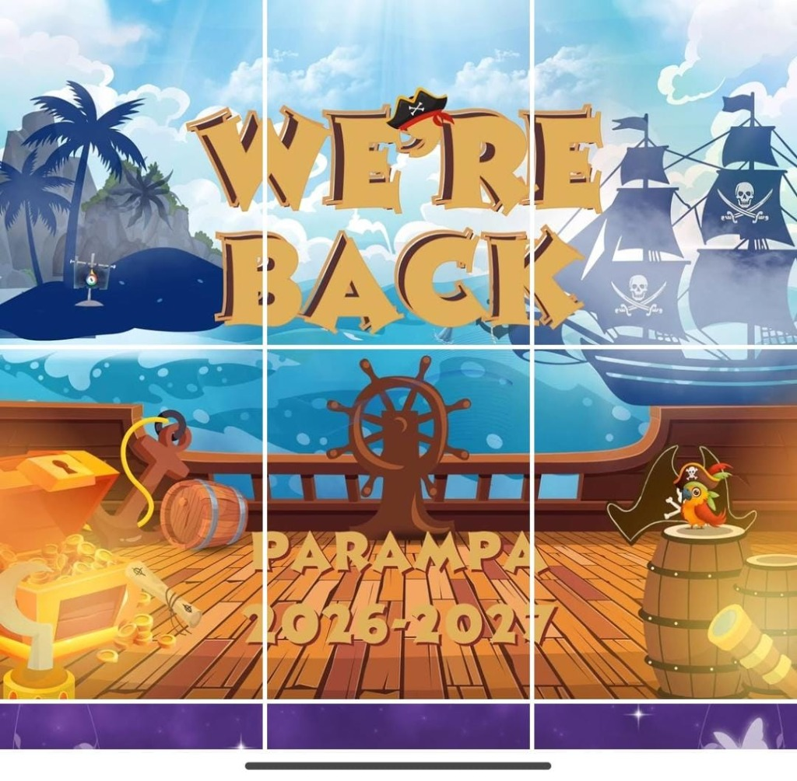

Tabir rahasia petualangan maritim telah terbuka! Masukkan identitas Anda untuk melihat surat keputusan resmi dan divisi penempatan Anda dalam ekspedisi PARAMPA FPMIPA UPI.

Ketik Nama Lengkap, NIM, serta Program Studi Anda untuk membuka hasil pengumuman dan kontak koordinator.
Tips: Anda juga dapat mencari dengan cukup memasukkan NIM saja atau melihat seluruh anggota di bagian Direktori Kru Kapal.
Jelajahi nama rekan pelaut Anda berdasarkan divisi masing-masing. Klik pada kartu nama staf untuk membuka rincian dan kartu pengumuman.
Catat tanggal-tanggal krusial dalam perjalanan panitia PARAMPA 2026-2027.
Segala hal yang perlu Anda ketahui setelah melihat hasil pengumuman oprec.
Ada pertanyaan seputar hasil seleksi, konfirmasi nama, atau kendala teknis? Jangan ragu menghubungi tim pusat bantuan PARAMPA.